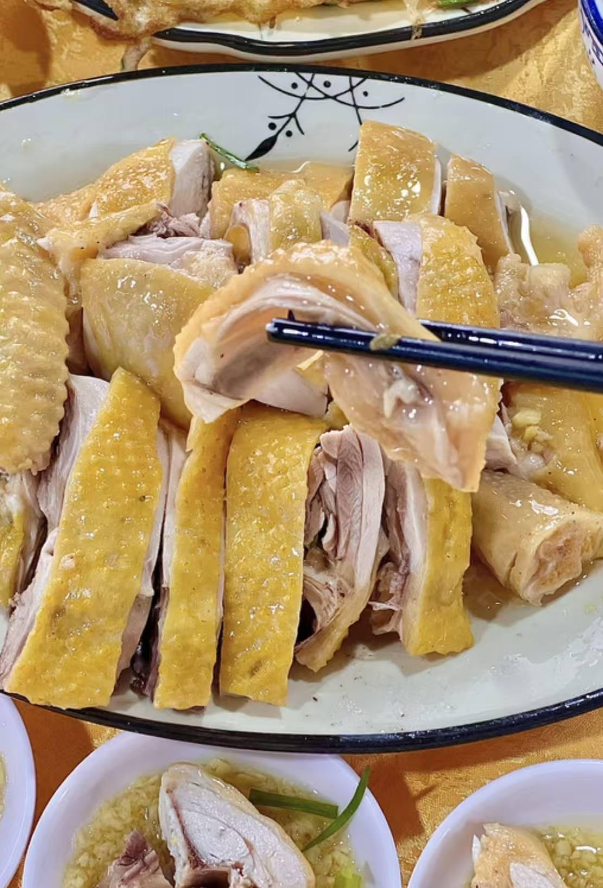
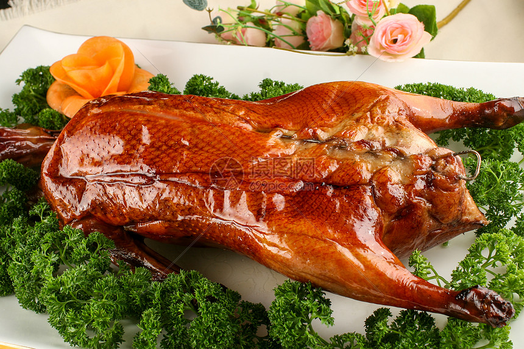
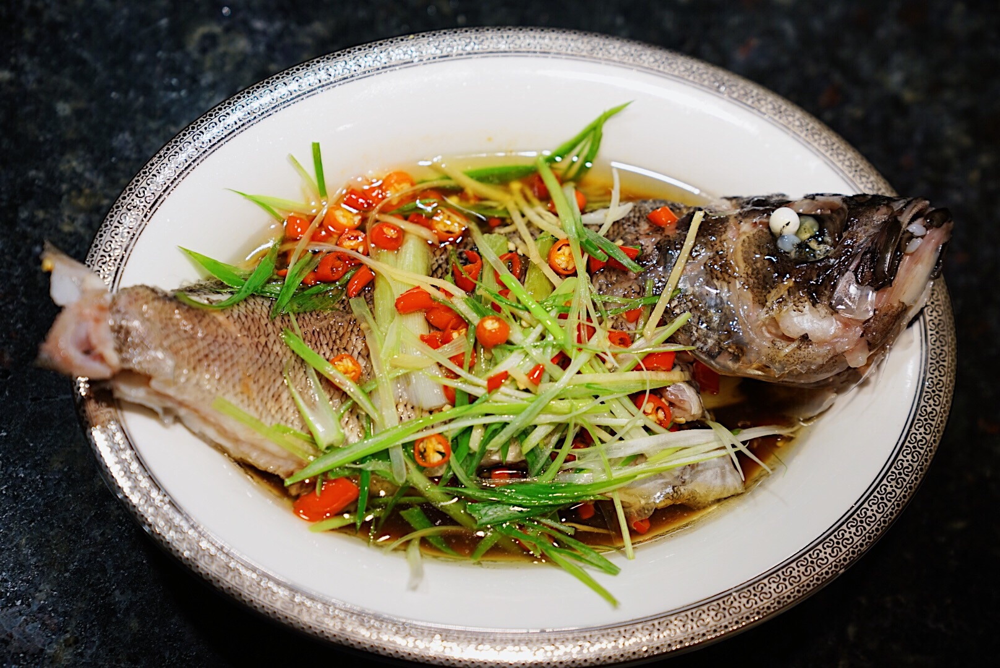

粤菜代表菜品
粤菜的经典菜品多以新鲜食材为核心，烹饪手法简约却不失精致，以下是最具代表性的几道粤菜：

白切鸡
粤菜中最具代表性的菜品，选用清远鸡为原料，以清水煮制至刚熟，保持鸡肉的原汁原味。搭配姜葱酱油食用，肉质鲜嫩爽滑，是广东宴席的必备菜。

广式烧鹅
以开平马冈鹅为原料，表皮刷上麦芽糖和醋的混合液，挂炉烤制后表皮金黄酥脆，肉质鲜嫩多汁。烧鹅的灵魂在于酸梅酱蘸料，解腻又提鲜。

清蒸石斑鱼
体现粤菜“清鲜”特点的代表菜，选用新鲜的石斑鱼，加入姜丝、葱丝清蒸，仅用少量生抽调味，最大程度保留鱼肉的鲜嫩和自然鲜味。